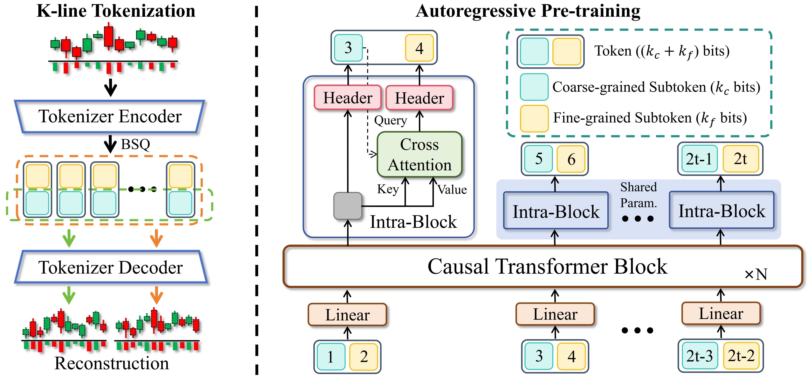
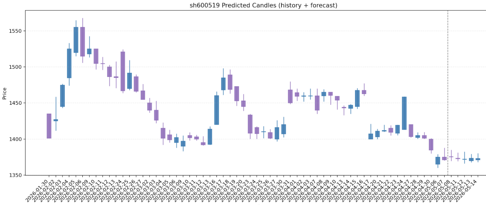
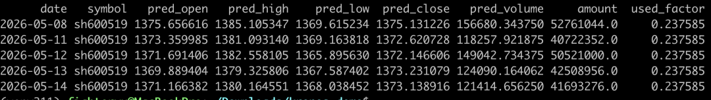
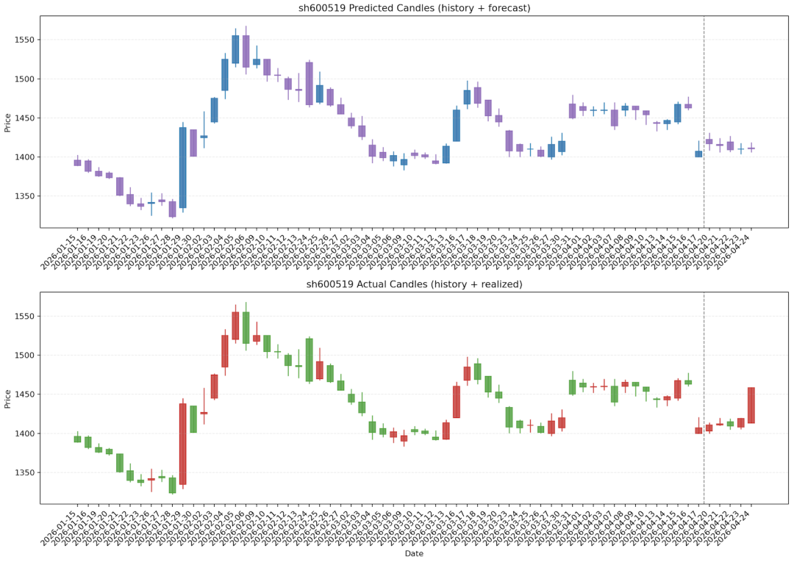
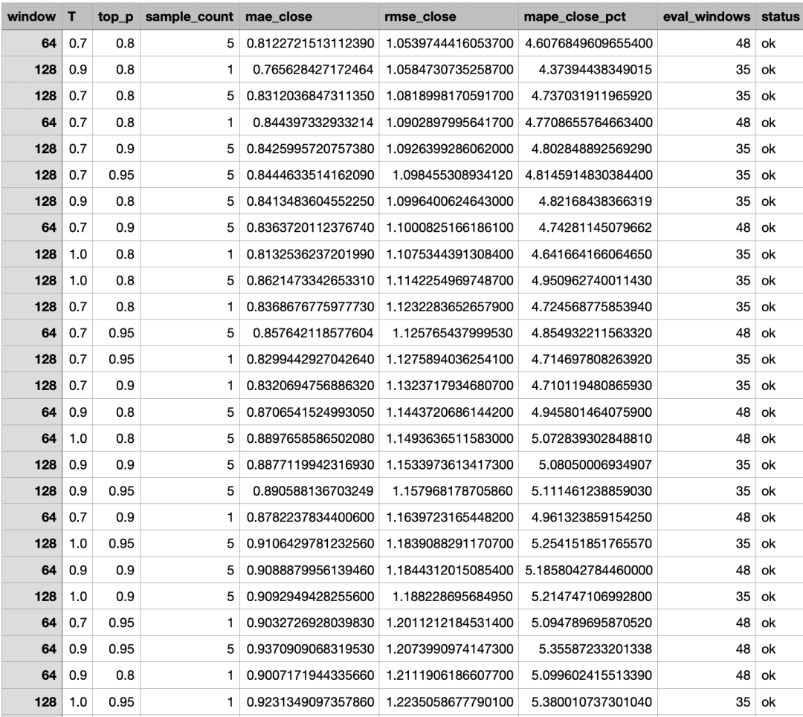

在 2026 年的 A 股市场，我们不仅在与人博弈，更是在与‘时间序列’背后的幽灵共舞。站在 2026 年这个节点，老派的技术分析正面临前所未有的生存危机。随着全面注册制的深化和超高频量化算法的普及，传统的 MACD、KDJ 甚至曾经被奉为神谕的“仙人指路”形态，似乎都在被某种无形的力量精准收割。当市场陷入“量价迷雾”，散户与大户的博弈已不再仅仅体现在盘口的挂单上，而变成了算力与逻辑的终极赛跑。最近看到Kronos金融模型，我决定尝试将Kronos接入我的 A 股量化工作流。
首先介绍一下Kronos。Kronos是一个专为金融市场"语言"——K线序列预训练的 decoder-only 基础模型系列。与通用时间序列预测模型（TSFM）不同，Kronos 专门设计用于处理金融数据独特的高噪声特性。它采用创新的两阶段框架：专用分词器首先将连续的多维K线数据（OHLCV）量化为分层离散令牌。随后基于这些令牌预训练大型自回归Transformer，使其成为适用于多种量化任务的统一模型。

我花了半天的时间在本地使用Kronos模型和qlib数据，在CPU上预测未来交易日的K线走势，并输出：K 线图（单图，上预测下真实）。
脚本支持两类模型输入：Kronos官方模型目录和普通 PyTorch 模型文件
项目目录格式：
xxxxxxxxxxkronos_demo/├── kronos_qlib_predict.py├── README.md├── qlib_data/├── model/├── tokenizer/└── Kronos/
目录说明：
xxxxxxxxxxqlib_data/：本地 qlib 数据目录model/：本地 Kronos 模型目录tokenizer/：本地 Kronos tokenizer 目录Kronos/：官方源码仓库，用于提供model.py
本地环境要求：
xxxxxxxxxxPython 3.10+CPU 环境即可已安装本地qlib数据
下载模型和 tokenizer
xxxxxxxxxxpython -m pip install -U huggingface_hubpython -c "from huggingface_hub import snapshot_download; snapshot_download(repo_id='NeoQuasar/Kronos-base', local_dir='/Users/fighteryu/Downloads/kronos_demo/model', local_dir_use_symlinks=False)"
xxxxxxxxxxpython -c "from huggingface_hub import snapshot_download; snapshot_download(repo_id='NeoQuasar/Kronos-Tokenizer-base', local_dir='/Users/fighteryu/Downloads/kronos_demo/tokenizer', local_dir_use_symlinks=False)"
模型目录中至少应包含：
xxxxxxxxxxconfig.jsonmodel.safetensors或其他*.safetensorstokenizer 目录中应包含 tokenizer 所需配置和词表文件。
下载官方 Kronos 源码
当前脚本在加载Kronos官方模型时，会使用：
xxxxxxxxxxfrom model import Kronos, KronosTokenizer, KronosPredictor
因此需要本地存在官方代码仓库：
xxxxxxxxxxcd ~/Downloads/kronos_demogit clone https://github.com/shiyu-coder/Kronos.git
运行脚本时，需要把Kronos仓库加入PYTHONPATH：
xxxxxxxxxxPYTHONPATH=~/Downloads/kronos_demKronos python ~/Downloads/kronos_demo/kronos_qlib_predict.py ...
标准运行方法
xxxxxxxxxxPYTHONPATH=~/Downloads/kronos_demo/Kronos python ~/Downloads/kronos_demo/kronos_qlib_predict.py \--provider-uri ~/Downloads/kronos_demo/qlib_data \--instrument sh600519 \--start 2023-01-01 \--end 2024-12-31 \--model-path ~/Downloads/kronos_demo/model \--tokenizer-path ~/Downloads/kronos_demo/tokenizer \--window 64 \--horizon 5 \--seed 40 \--out ~/Downloads/kronos_demo/kronos_pred.csv \--chart-out ~/Downloads/kronos_demo/kronos_pred.png
执行预测K线结果输出K线图

股票价格参数会输出到表格中，终端输出如下图

如果是预测的历史的交易数据，生成的图片会展示预测K线和实际K线，我们可以从图上直观的看到预测和实际K线的差别

参数搜索（自动回测）
如果你要自动找更优参数（window / T / top_p / sample_count），可以使用--tune：
xxxxxxxxxxPYTHONPATH=~/Downloads/kronos_demo/Kronos python ~/Downloads/kronos_demo/kronos_qlib_predict.py \--provider-uri ~/Downloads/kronos_demo/qlib_data \--instrument sh600519 \--start 2021-01-01 \--end 2024-12-31 \--model-path ~/Downloads/kronos_demo/model \--tokenizer-path ~/Downloads/kronos_demo/tokenizer \--horizon 5 \--seed 40 \--tune \--grid-window 64,128,256,384 \--grid-temp 1.0,0.9,0.7 \--grid-top-p 0.95,0.9,0.8 \--grid-sample-count 1,5,10 \--tune-stride 5 \--tune-max-windows 120 \--tune-out ~/Downloads/kronos_demo/kronos_tune_scores.csv
说明：
会在历史区间做滚动回测
评分指标为close的MAE / RMSE / MAPE
结果会保存到--tune-out
程序会打印RMSE(close)最优参数组合

如何提高预测的数据准确率？提升准确率最有效的是这几件事（按优先级）：
给你一个最实用的执行顺序（1天内可做）：
如果大家对我的话题感兴趣的话可以👍➕关注哦！